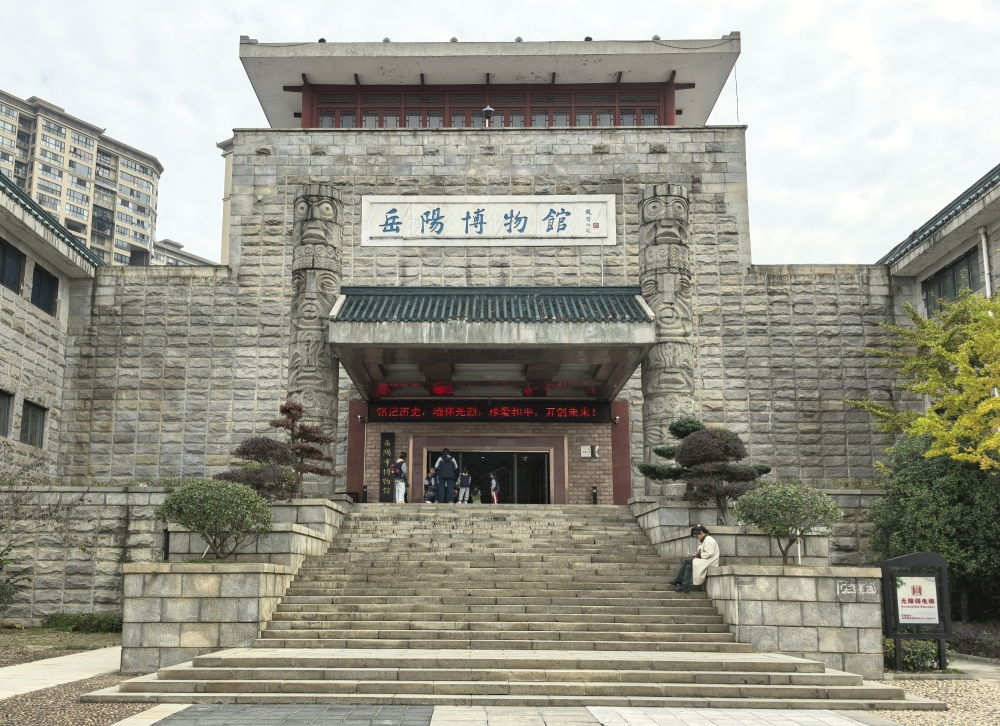
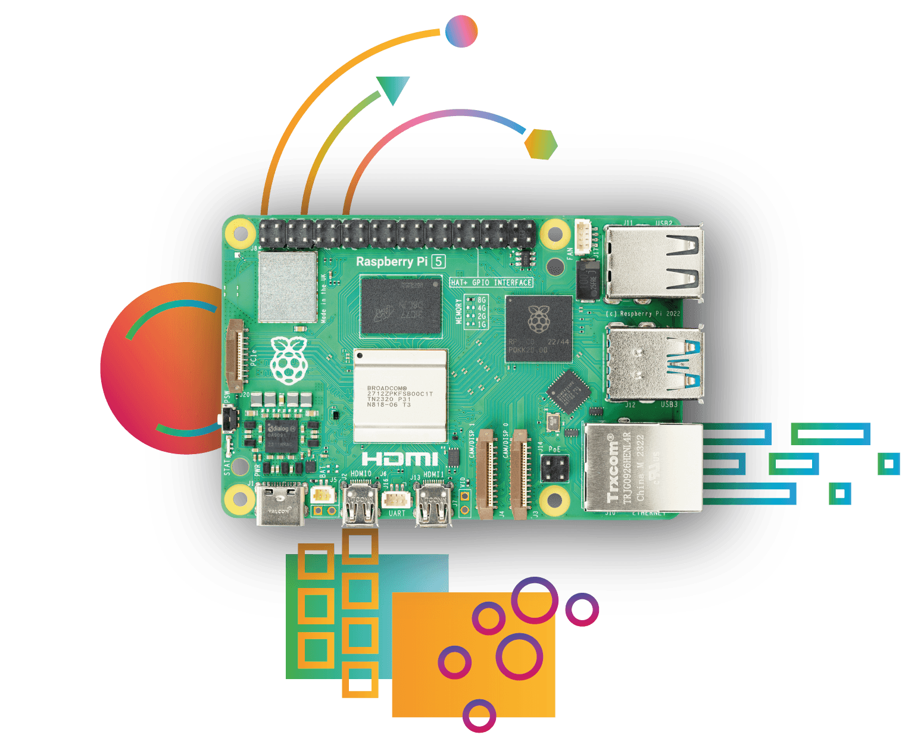
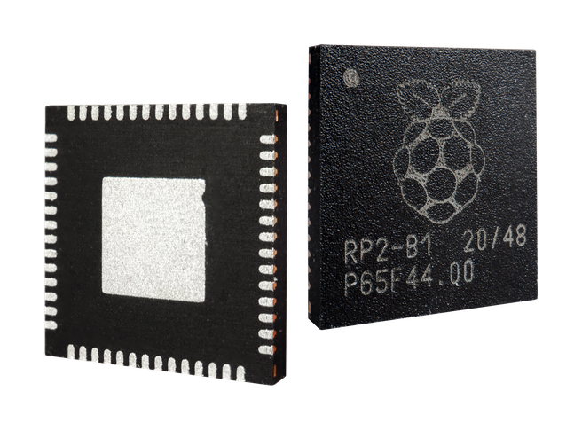
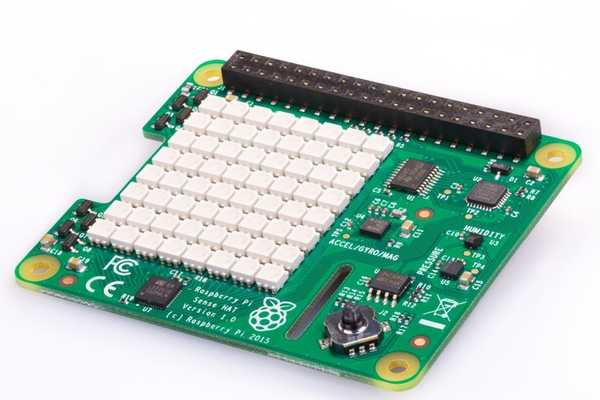
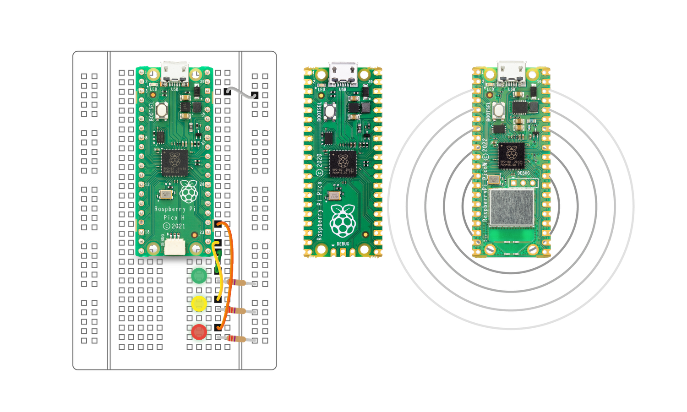

Xiaohongshu Jun. – Sep. 2026
Product Engineer · Lingxi AI · Shanghai
Built automated AI agent quality reports, KPI pipelines, observability dashboards and enterprise agent skill packages.
Hi, I’m Bowen Yu, an MSc Robotics student at The University of Manchester and a dual-degree graduate of Kean University (USA) and Wenzhou-Kean University, majoring in Computer Science and Technology with a minor in Mathematics.
I work at the intersection of AI agents, explainable AI and autonomous systems. My experience spans AI engineering at Xiaohongshu, leading a multi-agent project in the ByteDance AI Full-Stack Development Competition, 3D vision at SHINING 3D, and research in trustworthy machine learning.
Explainability, privacy-preserving learning and autonomous intelligence.
Publication details and statuses follow the supplied CV. Manuscript preview images supplied by Bowen Yu; click a thumbnail to enlarge. Preview versions may differ in title or layout from the final publication.
Built automated AI agent quality reports, KPI pipelines, observability dashboards and enterprise agent skill packages.

Designed a seven-node LangGraph multi-agent system for competitive intelligence, with MCP integrations, two-stage evidence verification and a self-correcting QualityAgent loop.
Led a multi-agent short-video generation system; built LLM evaluation infrastructure and backend services with FastAPI, Redis, PostgreSQL and Docker.
Contributed to active and passive 3D reconstruction algorithms, computer vision inspection models and large-scale data pipelines.
Secured Windows Server environments, investigated anomalous traffic and streamlined access request workflows.

Co-developed an exhibit information management module supporting 200+ artifacts; improved Java backend performance and resolved critical defects.
Company marks belong to their respective owners. Sources: Xiaohongshu · ByteDance · SHINING 3D · Sinopec. Museum photograph: Yueyang Municipal Government. Personal photograph supplied by Bowen Yu. AI product illustration is an original concept drawing. Project hardware photographs are sourced from Raspberry Pi and illustrate related hardware, not project implementations. University marks are sourced from the official websites of The University of Manchester, Kean University and Wenzhou-Kean University.

MSc Robotics
Autonomous Mobile Robots · Reinforcement Learning · Computer Vision · Robotic Systems
Dual Bachelor’s Degrees · Major: Computer Science and Technology
Minor: Mathematics
Zhejiang Provincial Government Scholarship · Six-time Dean’s ListHardware photographs illustrate the research themes; they are not photographs of the project implementations.

Team Leader · ByteDance AI Full-Stack Development Competition · May–Jun. 2026
Designed a seven-node LangGraph workflow for automated gaming mouse competitive analysis, connecting research, evidence collection, analysis, validation and reporting.
Built a self-correcting QualityAgent loop and a two-stage evidence verification framework. Integrated MCP tools for real-time specification retrieval, pricing analysis and competitor benchmarking. The team was shortlisted twice, selected for the final presentation, and recognised as an Outstanding Project Team.

BSc Dissertation · Supervisor: Dr. Yue Zhao · 2024–2026
A systematic review of Windows and Android malware analysis, examining benchmark datasets, deep learning approaches, and the roles of LIME and SHAP in detection interpretability.
Analysed the strengths and limitations of XAI-assisted detection and identified open challenges for scalable, transparent and trustworthy malware analysis systems.

Team Member · China-U.S. Young Maker Competition · Apr.–May 2025
Co-developed a hardware-software system combining wearable biometric data, AI-driven health analysis and automated flow control for personalised Traditional Chinese Medicine delivery.

Research Collaboration · ICNGN 2024
Modelled sensor and appliance agents using modular object-oriented programs to support perception, communication and autonomous execution of condition-action rules.
Started my MSc in Robotics at The University of Manchester.
Worked on AI application development and agent quality reporting at Xiaohongshu · Lingxi AI.
Completed dual bachelor’s degrees at Kean University (USA) and Wenzhou-Kean University, majoring in Computer Science and Technology with a minor in Mathematics.
Led an AI multi-agent competition project, shortlisted twice and recognised as an Outstanding Project Team.
Python · Java · R · SQL · HTML · CSS
PyTorch · TensorFlow · LangGraph · MCP · FastAPI · Redis · PostgreSQL · Docker
Chinese (native) · English (proficient)
I am also a national second-level volleyball athlete. Curiosity drives my research; teamwork and persistence shape how I build.
For research conversations, collaborations and opportunities.